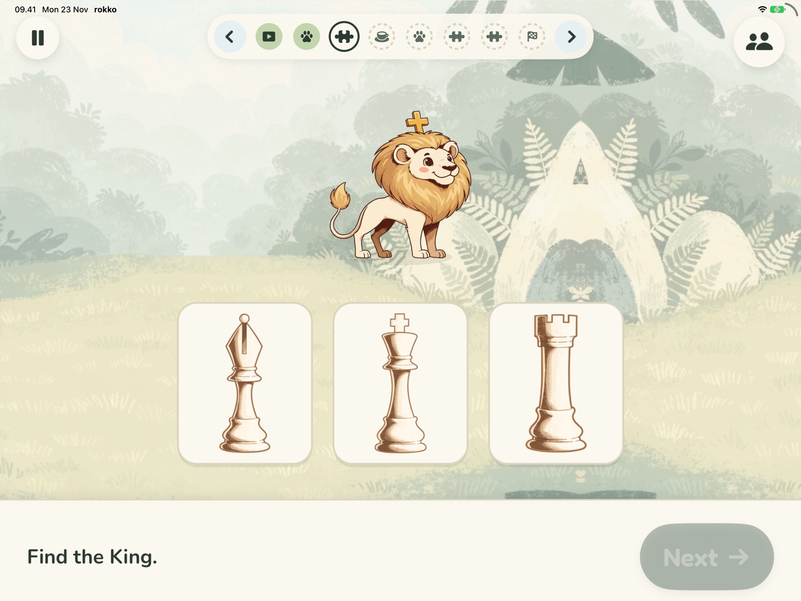
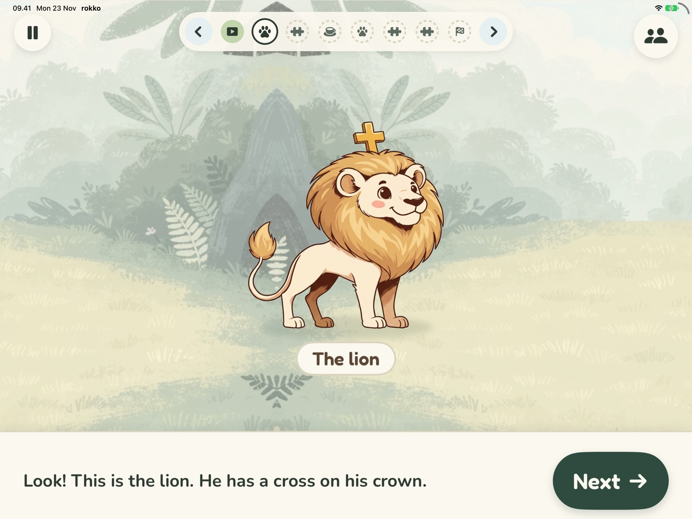

Chess, taught the way your child learns.
An iPad app for autistic children, aged 6 to 10, and the grown-up beside them.
- 📖Story
- 👆Touch
- ♟️Real board
An iPad app for autistic children, aged 6 to 10, and the grown-up beside them.
Many autistic children learn best through pictures and stories. A short film gives each chess piece a character and a reason, so the names and rules have something to hold on to.
Small games: find the piece, match it, build a team. One thing on screen at a time, the same question every time, spoken help when it's needed.



Between games, the grown-up hands over the real piece. Your child holds it, feels its shape and sets it on the board. No chess knowledge needed to lead.
From castling, the only move where two pieces move together in one turn: the king steps toward the rook, and the rook crosses over to stand beside him and keep him safe. Russian: rokirovka. Italian: arrocco.
The child is the king. The grown-up is the rook. They move together.